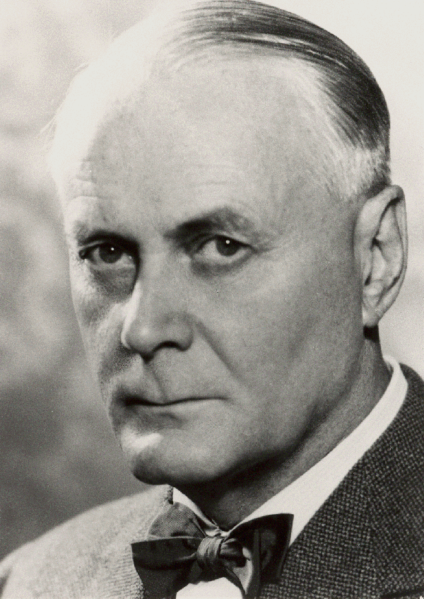

Ragnar Granit

Ragnar Arthur Granit, född 30 oktober 1900 i Riihimäki, Finland (familjens ursprung var från Korpo), död 12 mars 1991 i Engelbrekts församling, Stockholm.
Han var en finlandssvensk fysiolog och med.o.kir.dr. (1927).
Granit blev 1929 docent i fysiologi vid Helsingfors universitet och var 1937–1940 ordinarie professor. Han kallades sistnämnda år till Karolinska institutet i Solna, där han 1946–1967 var professor i neurofysiologi. Granit var en världens ledande forskare inom nerv- och sinnesfysiologin och utförde bl.a. grundläggande undersökningar av färgseendet, för vilka han 1967 tilldelades Nobelpriset i fysiologi eller medicin tillsammans med amerikanarna Haldan Keffer Hartline och George Wald.
Ett annat tema i Granits forskning var den centralnervösa kontrollen av muskelkontraktionen. Han presenterade sina rön i ett stort antal skrifter, bl.a. Sensory mechanisms of the retina (1947) och Receptors and sensory perception (1955). Av Granits övriga verk kan nämnas Ung mans väg till Minerva (1941, rev. upplaga 1958), Finlandssvenskarna (1944) och memoarverket Hur det kom sig (1983).
Granit invaldes 1944 som svensk ledamot nummer 912 av Kungliga Vetenskapsakademien. Han var styrelseledamot i Samfundet Nordens Frihet 1942–1945.[1] Han erhöll svenskt medborgarskap i mars 1941[2] och var församlingsmedlem i Finska församlingen i Stockholm.
Källa:
Wikipedia